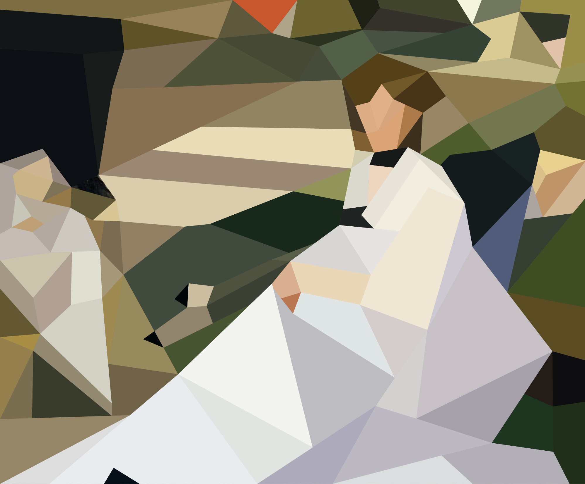
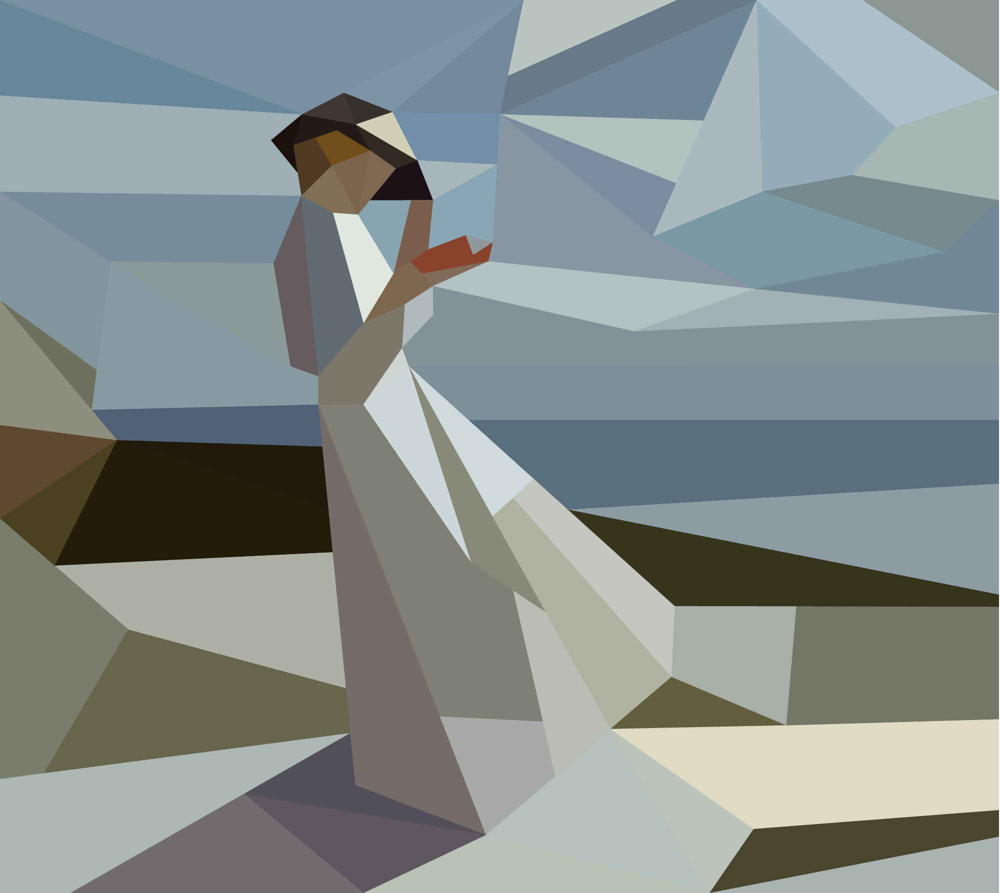
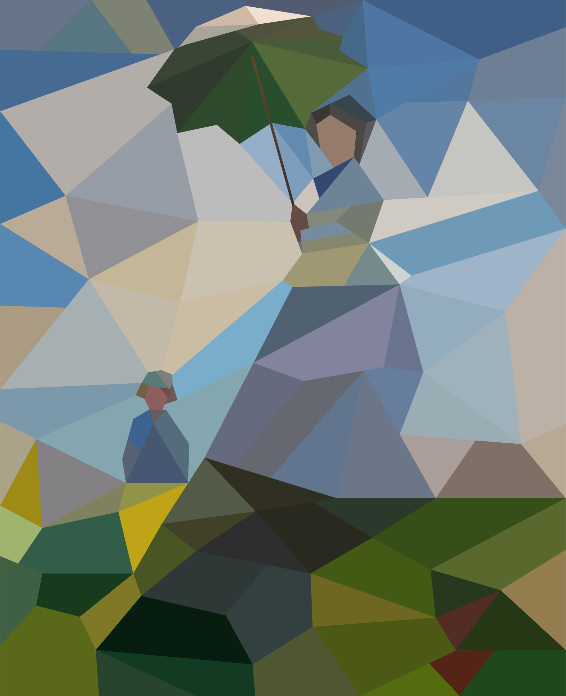
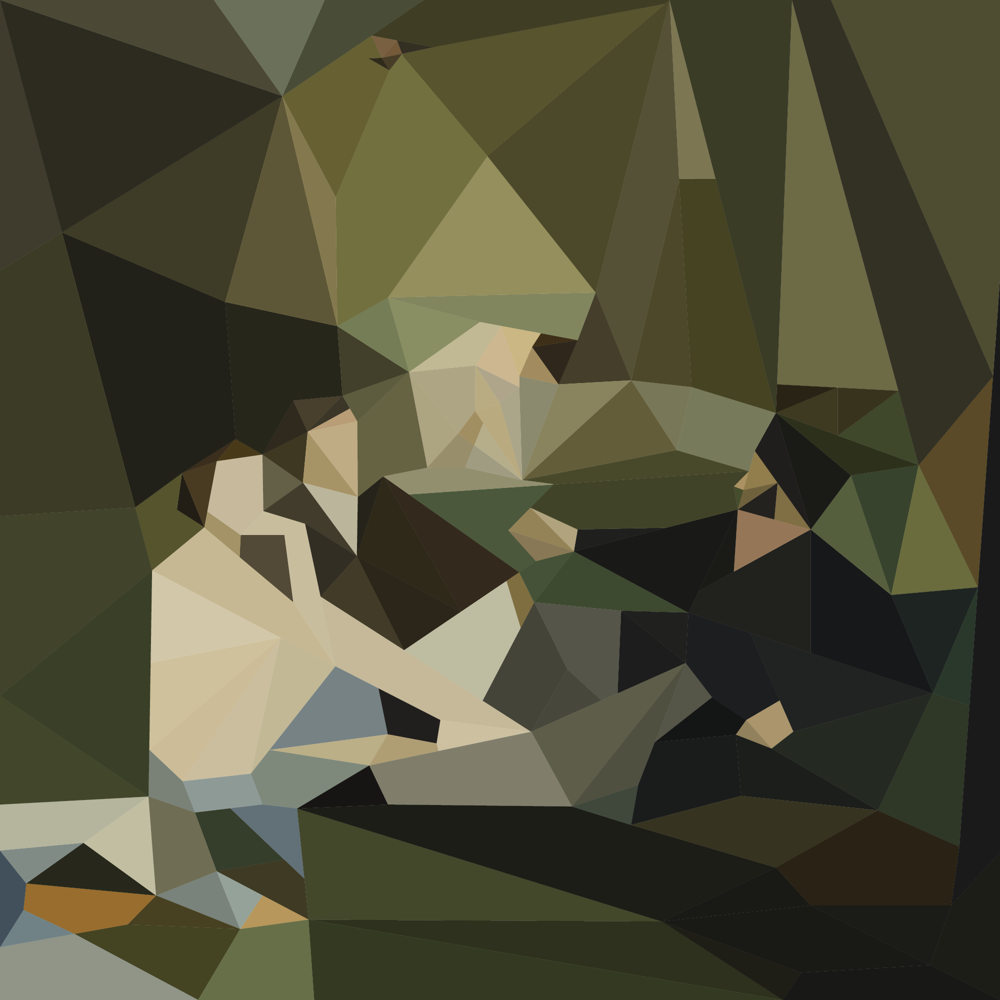
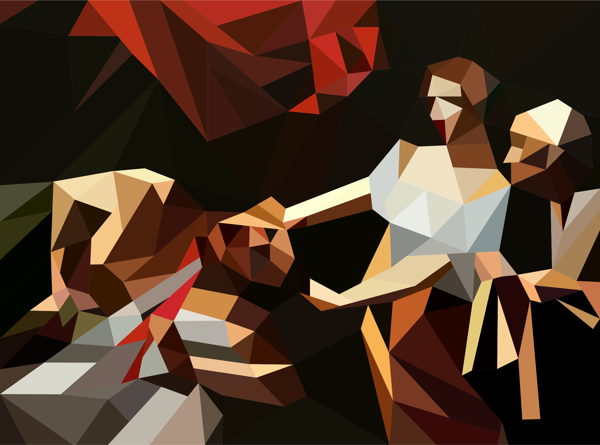
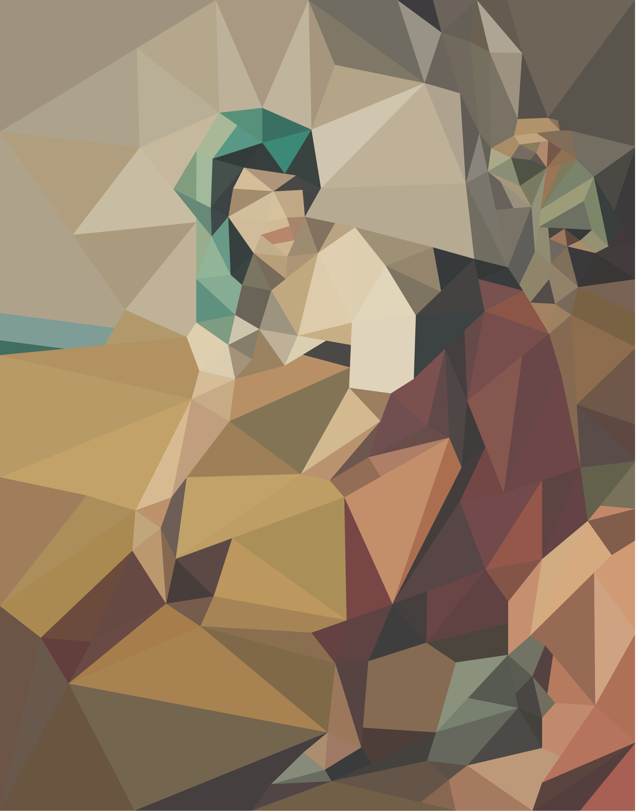
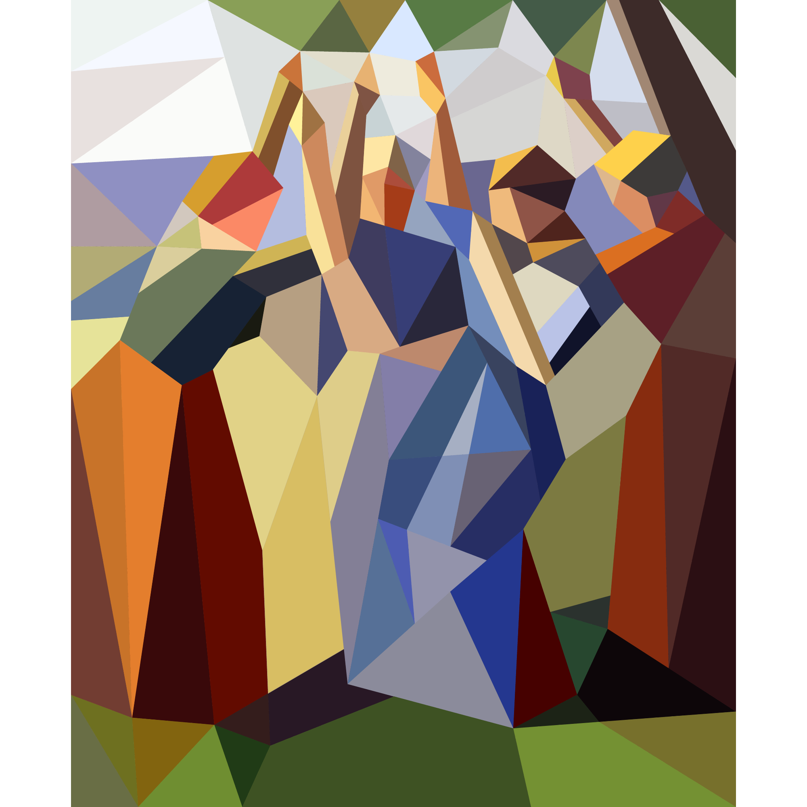
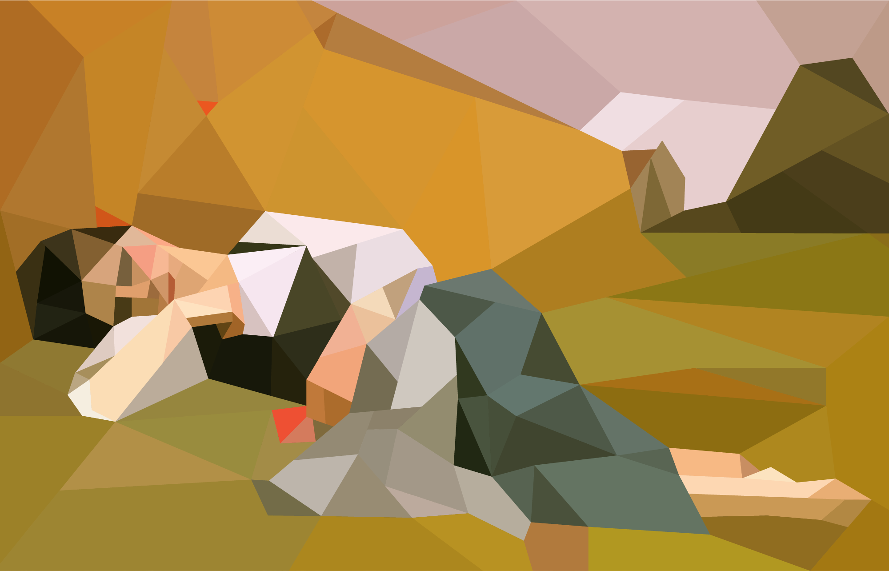
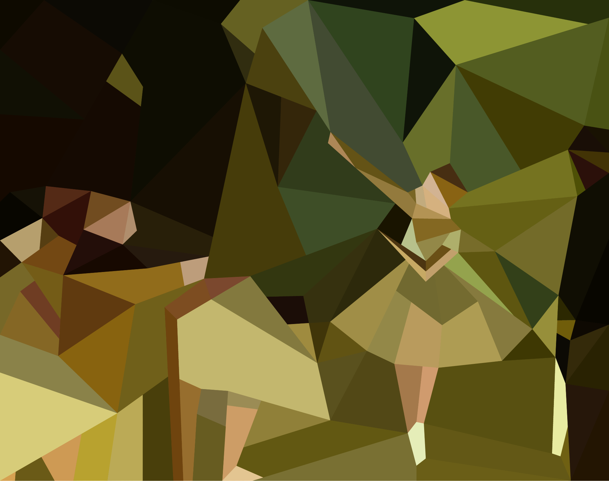
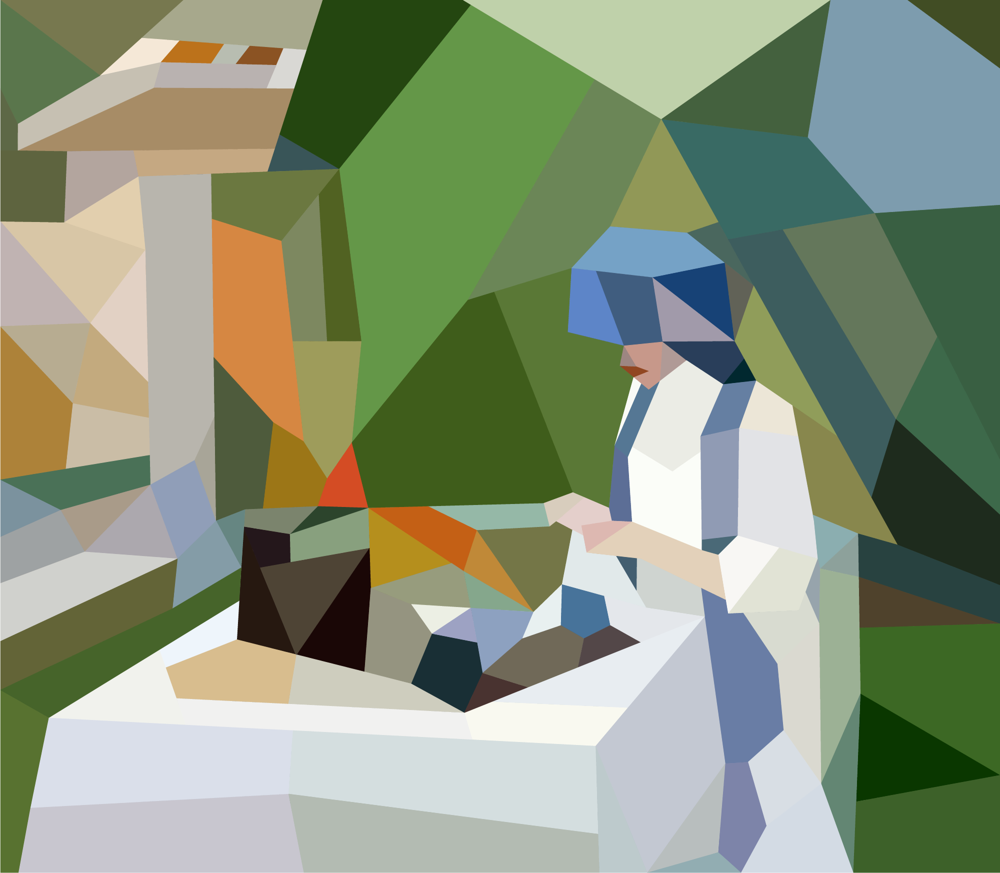

transforming classical paintings into digital abstractions, exploring themes of leisure and comfort
day at the beach (paul gustave fischer)
park life (edouard manet)
beach read (william orpen)
summer sun (claude monet)
picnic time (edouard manet)
st catherine (caravaggio)
killing the colonizer (caravaggio)
under surveillance (francisco ribera gomez)
dance break (camille pissarro)
napping on the job (william-adolphe bouguereau)
practice makes perfect (edgar dega)
tea time (hassam childe)